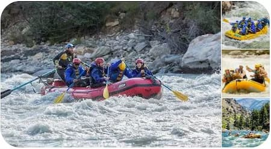

Choose Your Adventure
Our Trips

1. Day Trip
Duration: 4–6 hours
Price: $129 per person (includes lunch)
Thrilling class III–IV rapids perfect for first-timers and families. Paddle through
exciting
whitewater, enjoy a delicious riverside meal, and create memories that last a
lifetime. All gear and
safety equipment provided.
2. Overnight Adventure
Duration: 2 days / 1 night
Price: $289 per person
Take your adventure to the next level with a full day of rafting followed by a
relaxing evening at
our private riverside camp. Enjoy a hearty dinner under the stars, campfire stories,
and a scenic
breakfast before another exciting day on the river.
3. Multi-Day Expedition
Duration: 3–5 days
Price: Starting at $649 per person
The ultimate whitewater experience. Explore remote sections of the river, tackle
bigger rapids, and
immerse yourself in the wilderness. Includes all meals, top-of-the-line camping
gear, and
unforgettable nights under the stars.
4. Family / Beginner Float (Optional softer option)
Duration: 3–4 hours
Price: $89 per person
Gentler waters ideal for young children, families, and those wanting a scenic float
with light
rapids. Great introduction to rafting with plenty of wildlife viewing and photo
opportunities.
Equipment Included

Your safety and comfort are our top priorities. All necessary gear is included with
every trip so
you can focus on enjoying the adventure.
Safety Gear:
We provide USCG-approved life jackets, high-quality whitewater helmets, professional
river knives,
throw bags, first aid kits on every raft, and all other essential safety
equipment.
Rafting Equipment:
Every trip includes our high-performance inflatable rafts, carbon fiber or
reinforced paddles, foot
cups, safety lines, bilge pumps, repair kits, and waterproof dry bags for your
personal items.
Camping Equipment (included on Overnight and Multi-Day trips)
We supply spacious 4-season tents, comfortable sleeping bags rated for cool mountain
nights,
sleeping pads, camp chairs, dining tables, a full camp kitchen with cookware,
portable toilets,
handwashing stations, lanterns, and headlamps.
Meals & Refreshments:
All meals are included — a hearty lunch on day trips and full breakfast, lunch,
dinner, and snacks
on overnight and multi-day adventures. We also provide plenty of drinking water,
coffee, tea, hot
cocoa, and hydration support.